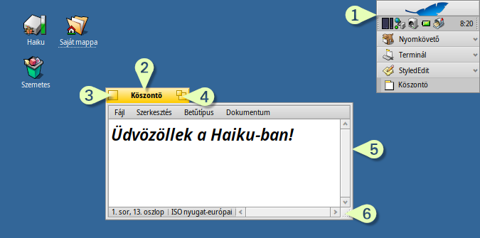
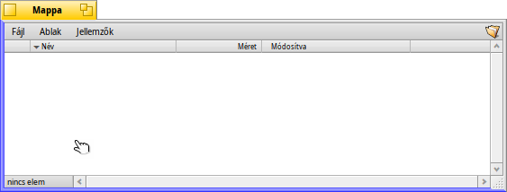
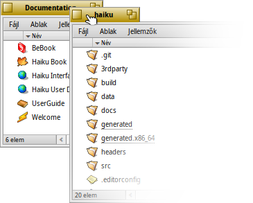
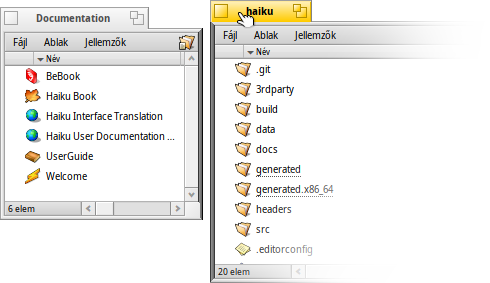
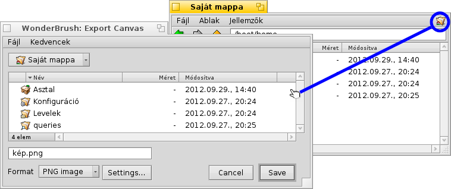
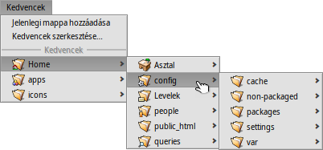

Magyar
Magyar Français
Français Deutsch
Deutsch Italiano
Italiano Русский
Русский Español
Español Svenska
Svenska 日本語
日本語 Українська
Українська 中文 ［中文］
中文 ［中文］ Português
Português Suomi
Suomi Slovenčina
Slovenčina Português (Brazil)
Português (Brazil) English
English| Index |
|
Könnyű mozgatás és méretezés Halmozás és csempézés Megnyitás és mentés panel Replikánsok |
A Haiku felhasználói felülete
A Haiku grafikus felhasználói felülete a rendszer részét képezi. Ellentétben a Unix-szerű operációs rendszerekkel, nincs különálló ablakkezelő, és éppen ezért a csak parancssoros indítás sem lehetséges. A Haiku elsősorban az asztali felhasználóra összpontosít.
Minden bizonnyal már rendelkezel más grafikus környezetbeli ismerekkel, ezért most nem térünk ki a "szabványokra", mint például a menük, helyi menük, az egérrel való munka, stb. Most pedig nézzük át a Haiku felületének sajátosságait.
Csupán néhány dolog jellemző a Haiku felületére, ami magyarázatra szorul.
A Haiku "Start menüje" az Asztalsáv. További információk az Asztalsáv fejezetben.
- A sárga fül nem csak egy program vagy egy fájl neve:
- Mozgathatjuk a SHIFT lenyomva tartásával, így lehetővé téve több ablak halmozását.
- Az ablak elrejthető (az Asztalsávra kicsinyíthető), ha duplán kattintunk a fülön (vagy a CTRL ALT M kombinációval). A már elrejtett ablakok hozzáférhetőek az Asztalsávon illetve a Programváltóban.
- Az ablak háttérbe küldhető, ha a fülön (vagy az ablak keretén) a jobb gombbal kattintunk.
Bezárás gomb.
Az ablak maximalizálására szolgáló gomb (CTRL ALT Z kombináció). A legtöbb programban az ablak teljes képernyőre történő átméretezésére szolgál. Azonban nem csak erre használható. A Nyomkövető például az ablakot a tartalom megjelenítésére optimalizált méretűre méretezi át.
Az ablak kerete. A bal oldali keret az ablak mozgatására, a jobb oldali pedig az ablak átméretezésére szolgál.
Méretező sarok.
 Könnyű mozgatás és méretezés
Könnyű mozgatás és méretezés
Az ablakok mozgatása és méretezése egy fontos része a programmal való interaktivitásnak. Ennek a kis sárga fülön és a vékony keret használatán túl van más módja is. A méretező sarok kis mérete miatt annak is megvannak a maga korlátai: csak az ablak átméretezésére van lehetőség a jobb alsó sarok irányába.
A jobb oldali keret a méretezésre szintén használható, de pontosan kell célozni az egérrel.
Ezen problémák kiküszöbölésére a Haiku különféle ablakkezelő kombinációkat tud használni a CTRL ALT és az egér használatával. További információk a Billentyűzet-kombinációk fejezetben.
A CTRL ALT lenyomásakor az egérhez közeli ablakkeret kiemelésre kerül. Mozgasd az egeret a többi keret felé, hogy másik keret legyen kijelölve. Kattints a jobb egér gombbal és mozgasd azt az ablak átméretezéséhez a kijelölt keret mentén.
Tartsd a CTRL ALT billentyűt és a bal egér gombot lenyomva majd mozgasd azt az ablak bármely részén az ablak mozgatásához. Gyors duplakattintás a jobb egér gombbal pedig hátraküldi azt.
Halmozás és csempézés
A Haiku egy egyedi lehetőséget nyújt a teljes ablakhosszúságú fejléccel ellentétben a füles stílusú ablakfejléccel. Ez a "Halmozás és csempézés".
Mint azt az alábbi példa mutatja, a Nyomkövető ablak a könyvjelzőkkel és a WebPositive ablak csempeszerűen illeszkenek egymáshoz. Ugyanakkor a WebPositive maga pedig egy másik Nyomkövető ablakkal (Saját mappa) van csoportba ("halomba") rendezve. A kép jól mutatja, hogy miként válthatunk a két ablak közt.
Az ehhez hasonló halmozáskor az ablakok mozgatása és méretezése együtt történik. Ez remek lehetőség arra, ha egy feladat több részét együtt akarjuk kezelni. Például, ha van egy böngésző ablak a dokumentációnak, egy másik ablak a szövegszerkesztőnek, egy harmadik, Nyomkövető ablak a fájloknak, illetve egy feladathoz tartozó levél is meg van nyitva, akkor ezt mind egyként kezelhetjük.
Az ablakok összerendezése egyszerű: tartsuk lenyomva az OPT billentyűt mialatt az egyik ablakot a fülénél fogva a másik ablak füléhez közel húzzuk, vagy a keretet a másik keretig addig, amíg a színe át nem vált, majd engedjük fel az egér gombját.
A halmozás és a csempézés két részből áll.
|  | A halmozáshoz az ablakokat a füleknél egymás fölé kell húzni, ezután automatikusan a fülek a megfelelő pozícióba kerülnek. |
|  | A "csempézés" annyit jelent, hogy az ablakokat függőlegesen vagy vízszintesen egymáshoz "ragasszuk". |
A szétválasztás hasonló módon történik, csak lenyomva kell tartani az OPT gombot, mialatt az ablakot kihúzzuk a csoportból.
Megnyitás és mentés panel
Megnyitáskor és mentéskor egy ehhez hasonló ablakot kapunk:
Itt megkapjuk a kiválasztott mappa tartalmát, mentés ablak esetében pedig egy beviteli mezőt is, ahová be tudjuk írni a fájl nevét, továbbá egy menüt is, amiben különféle típust választhatunk a fájl mentésekor.
Gyorsan a felsőbb szintű mappába juthatunk a lista feletti menüből.
Ha már megvan nyitva egy Nyomkövető ablak, ahonnan meg akarjuk nyitni a fájlt, egyszerűen csak húzzuk az ablakba az útvonal megfelelőjét, vagyis vagy a másik ablakból egy mappát (akár egy fájlt), vagy a kis ikont a jobb felső sarokban. Ekkor a megnyitás/mentés ablakban lévő útvonal megváltozik a belehúzott útvonallal.
Billentyű kombinációk
Sok kombináció rendelkezésünkre áll a megnyitás és mentés ablakokban, amik megegyeznek a Nyomkövető ablakban használatosakkal. Azon túlmenően, amik a menüből elérhetőek, néhány parancs nem teljesen nyilvánvaló:
| ALT N | Új mappa létrehozása. | |
| ALT E | A kijelölt bejegyzés átnevezése. | |
| ALT ↑ | Egy szinttel fejjeb lépünk | |
| ALT ↓ vagy ENTER | A kijelölt mappába lépés. | |
| ALT D | Az Asztalra ugrás. | |
| ALT H | A Saját mappára ugrás. |
Kedvencek és legutóbbi mappák
A menü a megnyitás és mentés ablakban tartalmazza a legutóbbi mappákat és a kedvenc helyeket, amiket magunk adhatunk meg. Ahogy azt a kis nyíl jelzi, ezek is használhatóak a navigálás során, ezek almenüjében is megjelenik a mappa tartalma.
Egy kedvenc mappa hozzáadásához egyszerűen csak keressük meg azt a mappát, és válasszuk a menüt. Mostmár ez minden megnyitás/mentés ablakban megjelenik. Törlés esetében pedig a kiválasztásával töröljük a már feleslegessé vált bejegyzést.
A kedvencek a /boot/home/config/settings/Tracker/Go/ mappában találhatóak. Tehát, akár egyszerű hivatkozás létrehozásával is adhatunk hozzá kedvenc fájlt vagy mappát.
Replikánsok
A replikánsok egy program egyéni felülettel rendelkező részei, amiket más programokban felhasználhatunk. Az Asztalsáv bejelölésével a programok replikánsait jelző kis kéz szerű jel megjelenik, mely általában a jobb alsó sarokban található:

A legkiválóbb hely a replikánsok tárolására az Asztal: egyszerűen csak húzzuk rá a kis kezet. Mostmár az Asztal részét képezi, és a replikáns programja már nem is kell, hogy fusson.
A jobb gombbal kattintva a replikáns jelén kapunk egy helyi menüt, amiben az eredeti program és a gombot találjuk.
A replikáns programokra remek példa a Folyamatmonitor grafikonjai, a Munkaasztalok kisalkalmazás vagy a Számológép.